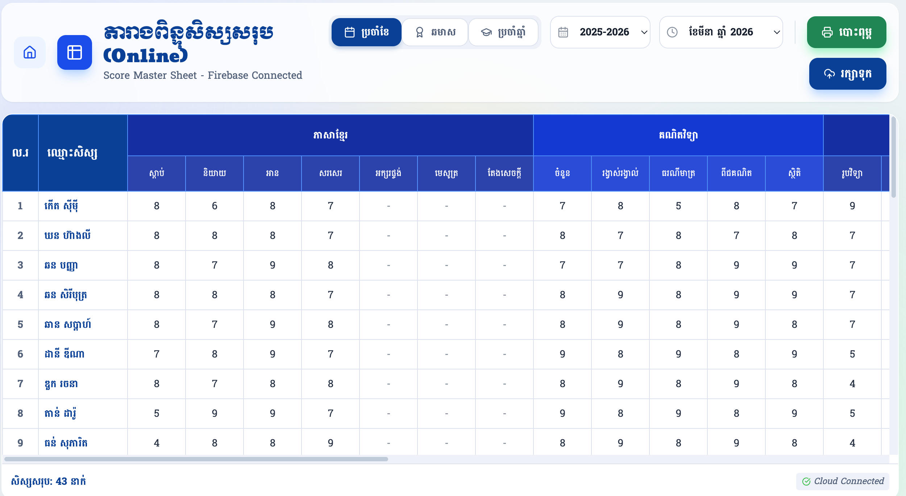
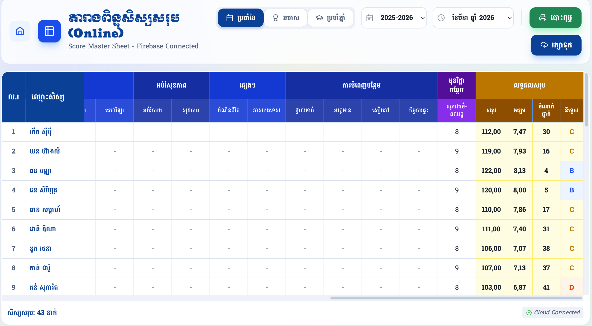
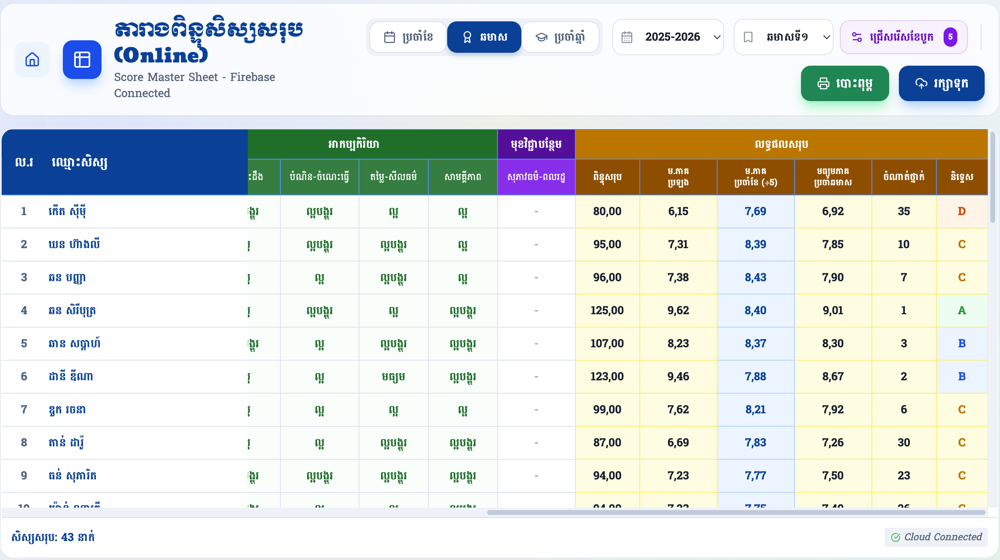
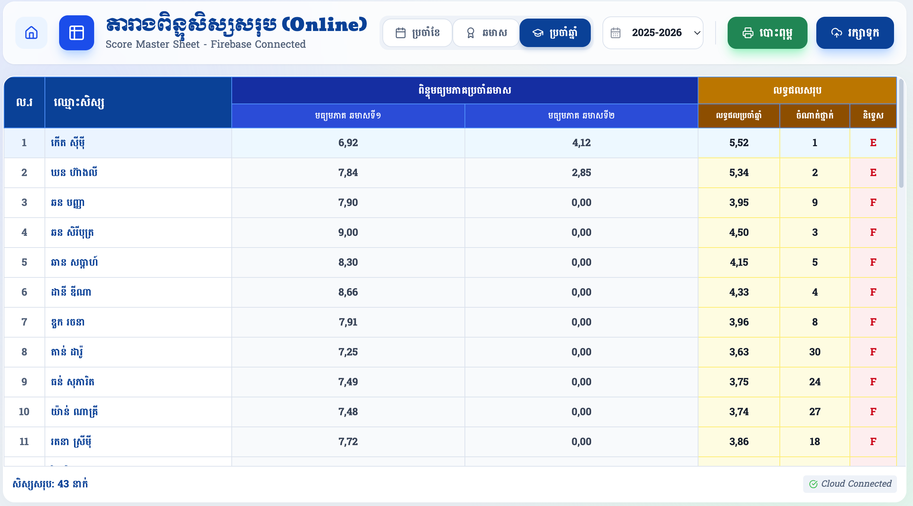

សៀវភៅណែនាំពីរបៀបប្រើប្រាស់តារាងពិន្ទុសរុបប្រចាំខែ ឆមាស និងប្រចាំឆ្នាំ។
ផ្ទាំងខាងក្រោមនេះគឺជាទិដ្ឋភាពទូទៅនៃ តារាងពិន្ទុសរុប ដែលអនុញ្ញាតឱ្យលោកអ្នកត្រួតពិនិត្យ និងបញ្ចូលពិន្ទុតាមគ្រប់មុខវិជ្ជា៖

នៅផ្នែកកណ្តាលខាងលើ លោកអ្នកអាចចុចប្តូររវាង ប្រចាំខែ ឆមាស និងប្រចាំឆ្នាំ។ ប្រព័ន្ធនឹងផ្លាស់ប្តូរទម្រង់តារាង និងមុខវិជ្ជាទៅតាមជម្រើសរបស់លោកអ្នកដោយស្វ័យប្រវត្តិ។
លោកអ្នកត្រូវជ្រើសរើស ឆ្នាំសិក្សា និង ខែ (ឬឆមាស) ដែលចង់បញ្ចូល ឬពិនិត្យមើលពិន្ទុ។ ការផ្លាស់ប្តូរនៅទីនេះ នឹងទាញយកទិន្នន័យពី Cloud មកបង្ហាញភ្លាមៗ។
លោកអ្នកអាចចុចលើប្រអប់ទទេនៅក្នុងតារាង ដើម្បីបញ្ចូលពិន្ទុសម្រាប់មុខវិជ្ជានីមួយៗ។ រាល់ពេលបញ្ចូលរួច ប្រព័ន្ធនឹងធ្វើការបូកសរុប និងចាត់ថ្នាក់សិស្សដោយស្វ័យប្រវត្តិ។
រាល់ពេលបញ្ចូល ឬកែប្រែទិន្នន័យរួចរាល់ សូមកុំភ្លេចចុចប៊ូតុង រក្សាទុក ពណ៌ខៀវ។ លោកអ្នកក៏អាចចុចប៊ូតុង បោះពុម្ព ពណ៌បៃតង ដើម្បីទាញយកជាឯកសារ PDF ឬព្រីនចេញ។
នៅផ្នែកខាងស្តាំនៃតារាង (ពណ៌លឿង) គឺជាទីតាំងដែលប្រព័ន្ធបង្ហាញពីលទ្ធផលបូកសរុបប្រចាំខែ ដែលត្រូវបានគណនាដោយស្វ័យប្រវត្តិ៖

នៅពេលលោកអ្នកប្តូរទៅកាន់ផ្ទាំង ឆមាស ឬ ប្រចាំឆ្នាំ ប្រព័ន្ធមានមុខងារពិសេសក្នុងការទាញយកទិន្នន័យពីខែចាស់ៗមកបូកបញ្ចូលគ្នា៖


ចំណាំ៖ សម្រាប់ផ្ទាំងឆមាស លោកអ្នកមានប៊ូតុង "ជ្រើសរើសខែបូក" (ពណ៌ស្វាយ) ដែលអនុញ្ញាតឱ្យលោកអ្នកកំណត់បានថា តើចង់យកខែណាខ្លះមកបូកបញ្ចូលគ្នាដើម្បីរកមធ្យមភាគប្រចាំខែ។
ដើម្បីស្វែងយល់កាន់តែច្បាស់ និងការអនុវត្តជាក់ស្តែងពីរបៀបប្រើប្រាស់តារាងពិន្ទុសរុបនេះ សូមទស្សនាវីដេអូណែនាំខាងក្រោម៖